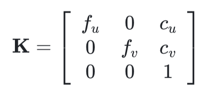
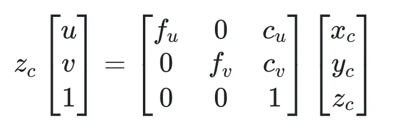
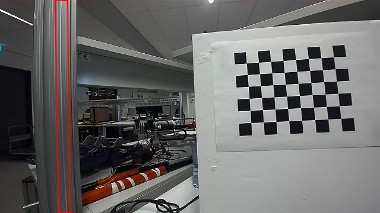
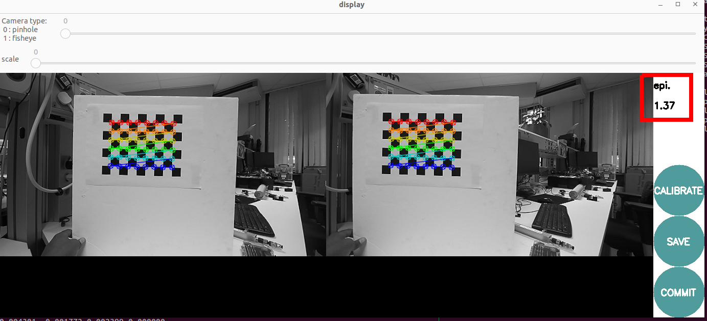
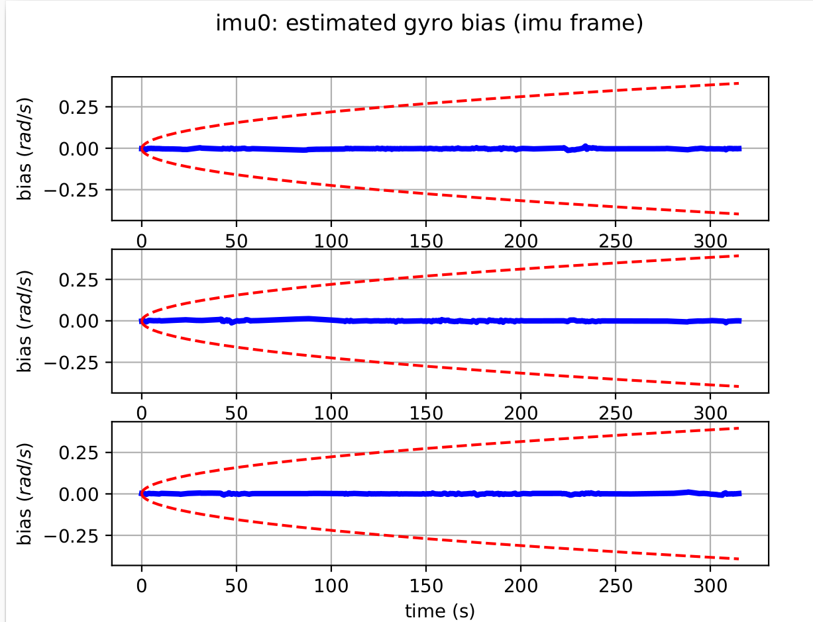

Understand what sensor calibration is and why it’s critical for localization and mapping.
Understand What is intrinisic and extrnisic callibration.
Perform intrinsic and extrinsic calibration using open-source tools.
The fundamental objective of sensor calibration in SLAM systems is to ensure accurate spatial perception by establishing precise mathematical relationships between sensor measurements and the physical world. As SLAM systems increasingly rely on multi-sensor fusion architectures, proper calibration becomes essential for maintaining spatial consistency across different sensing modalities. The goal is to minimize systematic errors that can propagate through the SLAM pipeline, ultimately affecting localization accuracy and map quality.
Current technological trends indicate a growing complexity in SLAM sensor configurations, with systems commonly integrating LiDAR, cameras, IMUs, wheel encoders, and other specialized sensors. Each sensor type introduces unique calibration challenges related to intrinsic parameters (internal characteristics) and extrinsic parameters (spatial relationships between sensors). The industry is moving toward more robust, automated calibration procedures that can adapt to environmental changes and sensor degradation over time.
Common Reference Frames in Sensor Fusion and Calibration¶
In localization, mapping, and multi-sensor fusion, consistent definition and transformation between reference frames is essential. Each frame represents a coordinate system attached to a specific entity (e.g., world, robot, sensor). Below are the most common frames used in SLAM and calibration systems.
World Frame: The World frame (or Map frame) is a global, fixed reference system used to express the absolute position and orientation of the robot and environment.The Zₚ axis typically points upward (or opposite to gravity, depending on convention).The origin is arbitrarily set at the system initialization, often at the robot’s or camera’s starting pose.
Odome Frame: is a local reference frame used to track the robot’s motion over time relative to its starting position. It is typically updated incrementally by wheel encoders, visual odometry, or other motion estimation sensors.
Body Frame: represents the robot’s physical body, typically attached to the IMU or the vehicle chassis.
It acts as the central reference for all onboard sensors (LiDAR, cameras, GNSS, etc.).In a right-handed coordinate system, the x-axis points forward in the robot’s motion direction, the y-axis points to the left, and the z-axis points upward.
Camera Frame: The Camera Frame (C) is centered at the optical center of the camera and follows computer vision conventions. The z-axis points forward along the optical axis, x-axis points right, and y-axis points downward, aligned with image coordinates. This differs from the body or IMU frame (where z points upward). In multi-camera systems, each camera (C1,C2) has its own pose relative to the body frame, defined by the extrinsic transform.This frame is fundamental for projecting 3D world points onto the image plane.
Image (Pixel) Frame: The Image Frame (I) is a 2D coordinate system on the camera’s image plane, where each point corresponds to a pixel location. The origin (u=0,v=0) is typically at the top-left corner, with the u-axis pointing right and v-axis pointing down. 3D points from the camera frame are projected into this frame using the camera intrinsic matrix (K) and distortion model.
Intrinsic calibration estimates the camera’s internal parameters, describing how 3D points in the camera frame are projected onto the 2D image plane.we use camera intrinsic parameter matrix, describes some of the physical properties of the camera lens. It is a 3x3 matrix with the following form:

fu and fv (fx and fy): These two parameters are the focal length of the camera, usually in pixels. fx for the x-direction and fy for the y-direction. Ideally, fx and fy should be equal, as most cameras have square pixels. However, in practical applications, they may differ due to reasons such as lens distortion and manufacturing errors.
cu and cv (cx and cy): These two parameters are the coordinates of the image center (principal point). Ideally, the principal point should be at the exact center of the image. However, in practice, it may deviate due to various reasons (e.g., lens shift, manufacturing error, etc.).
Convert a point Pc=(Xc, Yc, Zc) in the camera coordinate system to a point Pi=(u,v) in the image/pixel coordinate system. The transformation process can be expressed as:

Distortion Coefficients: Real lenses usually deviate from the ideal pinhole camera model, introducing significant distortion to images. As a result, camera parameters include Distortion Coefficients in addition to intrinsics and extrinsics. The main types of distortion are radial distortion and tangential distortion.
Callibration Target- Camera calibration relies on predictably shaped and easy to localize calibration targets. Knowing the targets to identify in calibration images along with their spacing allows the optimization to reason about how the targets exist in space.Popular targets include checkerboard patterns, Aruco markers, Charuco markers, and circle grids, with potential modifications on those few.
Checkerboard patterns are simple and easy to use.OpenCV has a chessboard calibration library that attempts to map points in 3D on a real-world chessboard to 2D camera coordinates.Any object could have been used (a book, a laptop computer, a car, etc.), but a chessboard has unique characteristics that make it well-suited for the job of correcting camera distortions:
It is flat, so you don’t need to deal with the z-axis (z=0), only the x and y-axis. All the points on the chessboard lie on the same plane.
There are clear corners and points, making it easy to map points in the 3D real world coordinate system to points on the camera’s 2D pixel coordinate system.
The points and corners all occur on straight lines and with the same space.
This tutorial uses a 8x6 checkerboard with 0.23cm squares. Calibration uses the interior vertex points of the checkerboard, so an “9x7” board uses the interior vertex parameter “8x6” as in the example below.
There are a number of camera calibration tools available to do this calibration, but if you’re already working in ROS, one of the easier options is the camera_calibration package.
To start first install docker and setup environment. This docker environment installs camera_callibration package within ros2-humble.
The next thing we need is data for the calibration to be run on. Normally, you would be able to use a live camera feed for the intrinsic calibration, but to make this training more universally accessible and repeatable, we will be working from bag files.
Download rosbag2_callibration1 file and put it camera_callibration_ws/resources folder.
In the first one, run the first rosbag file on loop inside docker environment.
We use the above command to calibrate the ZED camera's left lens using the raw image topic /zed/zed_node/left/color/raw/image. The --size 8x6 option specifies that the checkerboard used has 8 inner corners horizontally and 6 vertically, and --square 0.023 sets the square size to 0.023 meters. The --remap arguments link the calibration node to the correct image and camera topics namespace recorded in the bag file.
You should see a pop-up. In order to get a good calibration you will need to move the checkerboard around in the camera frame such that: checkerboard on the camera's left, right, top and bottom of field of view
X bar - left/right in field of view
Y bar - top/bottom in field of view
Size bar - toward/away and tilt from the camera
checkerboard filling the whole field of view
checkerboard tilted to the left, right, top and bottom (Skew)
a) Size bar-toward/away from the camera
b) X bar - left/right in field of view
c) Y bar - top/bottom in field of view
d) Skew bar - checkerboard tilted.
Figure 1: Required Camera Motions During Calibration
When all the 4 bars are green and enough data is available for calibration the CALIBRATE button will light up. Click it to see the results. It takes around the minute for calibration to take place.After the calibration is completed the SAVE and commit buttons light up. And you can also see the result in terminal.
A successful calibration typically has a mean reprojection error below 0.3 px.The closer to zero, the better.In our case, the GUI shows a 0.23 px error (displayed as “lin” in Figure 5), indicating accurate calibration.
To record these parameters down, click save.It will save to /tmp/calibrationdata.tar.gz.Let’s get the files somewhere we can easily reach them
This records all the original images used for the calibration, as well as the calibration parameters in two files: ost.txt and ost.yaml. Different applications expect intrinsics in a number of different ways, so you’ll likely have to place particular parameters from these files in a certain structure.
The camera calibration YAML file stores the camera’s intrinsic parameters for image correction.
The main parts are:
Image size – width and height of the calibration images.
Camera matrix (K) – defines intrinsic parameters such as focal lengths and optical center.
Distortion coefficients – describe lens distortion for image undistortion.
Rectification matrix (R) – aligns images to a common plane; identity for mono cameras.
Projection matrix (P) – maps 3D camera coordinates to 2D image pixels and may differ from K after rectification.
The calibration results should be applied to the raw image so subsequent image processing can use corrected images. In ROS2, this is done in two steps:
Copy the calibration YAML file to camera_pipeline package.This uses the callibration file to rectify the raw image as image_rect topic.
Open a new terminal and launch RViz with two image displays:
/zed/zed_node/left/color/raw/image and /image_rect.
Play the rosbag and pause it with the spacebar.
As illustrated in the images below, the left (raw) image appears distorted, with the vertical bar inside the red highlighted region noticeably curved. In contrast, the right (rectified) image shows the same bar as a straight line, demonstrating that the camera calibration and rectification process effectively corrected the lens distortion.

a) raw image
b) corrected(rectifed) image
Figure 2: Comparison of Raw and Rectified Images
Extrinisic Callibration
Extrinsic calibration determines the camera’s pose relative to another reference frame, such as the world, body, or another sensor (e.g., camera or LiDAR). It defines how different sensors are spatially related and enables consistent projection of points between coordinate systems. In multi-camera or sensor-fusion setups, accurate extrinsic calibration ensures proper alignment between the camera, IMU, and LiDAR, which is essential for reliable stereo vision, visual-inertial odometry, and SLAM applications.
For this experiment, we use the ZED stereo camera to perform extrinsic calibration.
The goal is to estimate the relative pose of the right camera with respect to the left camera, which defines the stereo baseline — the physical separation and orientation difference between the two lenses.
The resulting extrinsic parameters (rotation R and translation T) describe how to transform points from the right camera’s coordinate frame into the left camera’s coordinate frame. These parameters are later used for stereo rectification and depth estimation.
You should see a pop-up.In order to get a good calibration you will need to move the checkerboard around in the camera frame.When all the 4 bars are green and enough data is available for calibration the CALIBRATE button will light up. Click it to see the results. It takes around the minute for calibration to take place.After the calibration is completed the SAVE and COMMIT buttons light up. And you can also see the result in terminal.
To record these parameters down, click save.It will save to /tmp/calibrationdata.tar.gz.Let’s get the files somewhere we can easily reach them
Inside the extracted folder, you will find:left.yaml(parameters of the left camera) and right.yaml(parameters of the right camera) The structure of these files is similar to those obtained from intrinsic calibration. However, to analyze the extrinsic calibration, we focus on the projection matrices (P matrices).
The fourth element in the first row of the right projection matrix (here -33.6074) represents the translation of the right camera along the x-axis relative to the left camera.
This value corresponds to the baseline distance between the two camera centers when scaled by the focal length:
Using the given data:
$$
\text{Baseline} = -\frac{-33.6074}{279.01721} \approx 0.1204 \, \text{m}
$$
Thus, the two cameras are separated by approximately 12.04 cm, which matches the expected ZED stereo baseline.
For parallel stereo cameras, the left and right cameras are almost perfectly aligned.This means the rotation matrixR between them is close to the identity matrix:which simplifies stereo processing.If the cameras were not parallel, a QR decomposition or SVD on a normalized version of the projection matrix can be used to to separate the rotation component
Now consider the stereo_small_board_bagfile.bag with a small checkerboard (--square 0.023 m):
Using a large checkerboard, the reprojection error is very low, less than 0.2 pixels, whereas using a small checkerboard results is a much higher error, greater than 1.2 pixels. The manufacturer-specified baseline for the ZED stereo camera is 12 cm, which is closely matched by the baseline obtained with the large checkerboard. In contrast, the high epipolar reprojection error observed with the small checkerboard indicates that this calibration is poor, and the resulting baseline does not align with the expected manufacturer value.
a) shows an epipolar reprojection error of 0.12 pixels

b) shows epipolar reprojection error of 1.37 pixels
Figure 3: Calibration results using different checkerboard sizes
The goal of camera-IMU extrinsic calibration is to accurately determine the transformation that defines the spatial relationship between the camera and the IMU.In this tutorial, we use Kalibr, a widely used tool for camera–IMU calibration. Kalibr uses motion-induced discrepancies between visual and inertial measurements of the same rigid body motion to solve for all unknown spatial, temporal, and intrinsic parameters simultaneously through continuous-time optimization.Camera tracks external AprilTag corners through projective geometry, while IMU senses internal accelerations and rotations. Calibration uses deliberate platform motion to create observable discrepancies between these measurements, revealing their spatial, temporal, and intrinsic relationships through optimization.
The following are prerequest to use Kalibr callibration tool:
A. Prepare the calibration target: Kalibr supports multiple target types, but an AprilGrid is strongly recommended. It allows partial visibility of the board while still resolving the pose correctly, making data collection easier.
Before starting, print an AprilGrid from the Kalibr wiki and fill out the corresponding aprilgrid.yaml(check Kalibr yaml formats) file:
- Count the number of rows and columns, then fill in the values for tagsRows and tagsCols accordingly.
- Measure the size of one AprilTag and set it as tagSize (in meters).
- Measure the spacing (black border gap) between two tags.
- Compute tagSpacing = spacing / tagSize.
For our tutoriall we will use a grid with 44 mm tags and 12.5 mm spacing.
target_type:'aprilgrid'#gridtypetagCols:6#number of apriltagstagRows:6#number of apriltagstagSize:0.0445#size of apriltag, edge to edge [m]tagSpacing:0.296#ratio of space between tags to tagSizecodeOffset:0#code offset for the first tag in the aprilboard
B. Record the calibration dataset (rosbag): Record a rosbag containing IMU and camera data:
To achieve accurate calibration, perform the following motions while keeping the target always in view and ensure that the calibration board can be seen from different orientations, distances, and in each part of the image plane.
C. IMU noise parameters: Kalibr requires IMU noise parameters such as noise density and random walk. These can come from the manufacturer’s datasheet or tools, but it is recommended to compute them using an Allan variance calibration, since IMU noise characteristics can change depending on the physical setup, mounting, and environment. A convenient ROS-based Allan variance tool is available here allan_variance_ros
For our tutoriall we will use a manufacturing callibration imu parametrs.
#Accelerometersaccelerometer_noise_density:1.4e-03#Noise density (continuous-time)accelerometer_random_walk:8.0e-05#Bias random walk#Gyroscopesgyroscope_noise_density:8.712683324559951815e-5#Noise density (continuous-time)gyroscope_random_walk:0.00074001958110154640244#Bias random walkrostopic:/zed/zed_node/imu/data_raw#the IMU ROS topicupdate_rate:100.0#Hz (for discretization of the values above)
Save this file asimu-params.yaml, which we will use as the input for the IMU calibration. After saving it, we can follow the steps below to run the calibration inside our Docker container.
To start first clone the docker container along with all its submodules (kalibr packages).This will build the Docker container with ROS and all necessary dependencies for Kalibr package.
git--recurse-submodulesclonegit@github.com:eliyaskidnae/slam-tutorial-practical.git# Clone the repository with all submodules (only if you haven't cloned it yet)cdslam-tutorial-practical/camera_imu_cal_ws/
dockercomposeup--build-d
Then opens a shell inside the Docker container, builds the Kalibr workspace and sources the setup file.
The next thing we need is data for the calibration to be run on. Normally, you would be able to use a live camera feed for the intrinsic calibration, but to make this training more universally accessible and repeatable, we will be working from bag files.
Download kalib_ros.bag file and put it camera_imu_cal_ws/resources folder.Put also the configuration files april-grid.yaml and imu_param.yaml inside /camera_imu_cal_ws/resources.
check for the bag file if it contains left and right camera topics as well as imu-raw topic.
cdresources/
rosbaginfokalib_ros.bag
The kalibr imu-camera calibration requires the intrinisic and extinisic callibration of both cameras.We can use other camera callibration and put it the Kalibr YAML format documentation or perform a new calibration using Kalibr’s camera calibration tool as foolowing command:
When the calibration is complete (it takes many minutes according to the number of image acquired) you will get the file kalib_ros-camchain.yaml and a full PDF report of the result of the calibration inside ~/callibration_ros1_ws/resources folder.
The quality of the camera calibration can be verified by inspecting the reprojection error scatter plots. In these plots, each point represents the difference between the detected AprilGrid corner and its projected location based on the estimated camera model.Since the points are tightly clustered around zero and the error stays below about 1.0 pixels with a Gaussian-like distribution, this indicates a good and reliable calibration.With a good calibration less than < 0.2-0.5 pixel reprojection errors is expected.
Figure 4: Camera reprojection error
Put the imu noise parametr as imu-params.yaml in camera_imu_cal_ws/resources.
After running kalibr_calibrate_imu_camera node, the camera calibration yaml will be extended by the imu-camera calibrator with imu-camera transformations.We can get also a PDF report containing the final calibration result and calibration analyses.
The rotation matrix tells us how the IMU is oriented relative to the camera. From this result, we can see that the IMU’s X-axis is pointing in the same direction as the camera’s forward Z-axis, meaning both sensors face the same way. The IMU’s Y and Z axes are rotated so they line up with the camera’s horizontal and vertical directions. In simple terms, the IMU is mounted in a way that its forward axis matches the camera’s viewing direction, while the other axes are rotated to properly align the two coordinate frames
Checking the translation part of the transformation matrix.
The translation part of the transformation matrix describes how far the IMU is located from each camera. For cam0, the IMU is shifted by +0.0223 m along the X-axis, meaning the IMU sits about 2.23 cm to the right of the left camera. For cam1, the translation is −0.097 m, meaning the IMU is about 9.6 cm to the left of the right camera. When we combine these two offsets, we get the total distance between the two cameras. This value is estimated as −0.1195 m, meaning the right camera is approximately 11.95 cm to the right of the left camera, which is the stereo baseline of zed-camera(12 cm).Your accelerometer and gyroscope errors are within their 3-sigma bounds (if not then your IMU noise or the dataset are incorrect).We can check also final rotation and translation with hand-measured values.
The quality of the IMU–camera calibration can be assessed by examining the reprojection error scatter plots. A good calibration is indicated when the reprojection errors lie within the 3-sigma bounds and are tightly clustered around zero. Although some outliers may appear, fewer outliers and a stronger concentration near zero generally reflect a more accurate calibration. In our results, the majority of the points remain close to zero, showing that the calibration quality is acceptable and consistent.For more explanation
Figure 5: Camera reprojection error during Camera-Imu callibration
Check also your accelerometer and gyroscope errors are within their 3-sigma bounds (if not then your IMU noise or the dataset are incorrect). Ensure that your estimated biases do not leave your 3-sigma bounds. If they do leave then your trajectory was too dynamic, or your noise values are not good.
The following figure shows angular velocity and bias error with in 3 sigma bound(red lines).
a) angular velocity error

b) gyroscope bias error
Figure 5: Angular velocity and bias error during Camera-Imu callibration
For more explanation about imu-camera calibration using kalibr package please refer this video tutoriall
Lidar-IMU extrinsic calibration aims to determine the precise spatial relationship between a LiDAR sensor and an Inertial Measurement Unit (IMU).For this experiment, we use the LiDAR_IMU_Init package, which provides tools to callibrate temporal offset and extrinsic parameter between LiDARs and IMUs, and also the gravity vector and IMU bias. The calibration should be done in an environment with some static surfaces, without moving objects in the lidar’s field of view. When recording the bag file, the box must be rotated around all axes (roll, pitch, and yaw).
Foolow the steps below to run the calibration inside our Docker container.
To start first clone the docker container along with all its submodules (LI-Init package).This will build the Docker container with ROS and all necessary dependencies for LiDAR_IMU_Init package.
git--recurse-submodulesclonegit@github.com:eliyaskidnae/slam-tutorial-practical.git# Clone the repository with all submodules (only if you haven't cloned it yet)cdslam-tutorial-practical/Lidar_imu_cal_ws/
dockercomposeup--build-d
2. Then opens a shell inside the Docker container, builds the workspace and sources the setup file.
The next thing we need data for the calibration to be run on.We will use dataset provided from in the callibration package repository.
There are many dataset provided for different type of LiDAR and IMU in this link
Download Hesai_apartment.bag file and put it Lidar_imu_cal_ws/resources folder.
check for the bag file if it contains lidar, imu topics and thier topic names.
cdresources/
rosbaginfoHesai_apartment.bag
for this dataset the topics are /hesai/pandar for lidar and /mavros/imu/data_raw for imu. The package containes a configuration and launch file for different lidar type and their parameters. go to Lidar_imu_cal_ws/src/LiDAR_IMU_Init/config folder and check for the configuration file that matches your lidar type.For this dataset we will use pandar.yaml file which is configured for Hesai Pandar lidar. Configure the parameters in the pandar.yaml config file as follows:
common:lid_topic:"/hesai/pandar"imu_topic:"/mavros/imu/data_raw"preprocess:lidar_type:5# Hesai PandarXTscan_line:32blind:3feature_extract_en:falseinitialization:cut_frame_num:3# must be positive integerorig_odom_freq:10mean_acc_norm:9.805online_refine_time:10 .0data_accum_length:300Rot_LI_cov:[0.00005,0.00005,0.00005]Trans_LI_cov:[0.00001,0.00001,0.00000001]mapping:filter_size_surf:0.1filter_size_map:0.1gyr_cov:20acc_cov:2b_acc_cov:0.0001b_gyr_cov:0.0001det_range:120.0publish:path_en:truescan_publish_en:true# false: close all the point cloud outputdense_publish_en:true# false: low down the points number in a global-frame point clouds scan.scan_bodyframe_pub_en:true# true: output the point cloud scans in IMU-body-framepcd_save:pcd_save_en:falseinterval:-1# how many LiDAR frames saved in each pcd file; # -1 : all frames will be saved in ONE pcd file, may lead to memory crash when having too much frames.
- The lid_topic and imu_topic should match the topics in the bag file.
- The lidar_type should match your lidar type(check the documentation for more details about different lidar type). 1 is for livox series(avia, mid360 and horizon LiDAR), 2 is for Velodyne LiDAR , 3 is for Ouster LiDAR , and 5 is for Hesai PandarXT.
- The scan_line is the number of laser beams in your lidar. For Hesai PandarXT it is 32.
- The cut_frame_num determines the numberof to split one frame into subframe to improve odom frequency and must be positive integer.The orig_odom_freq is Original LiDAR input frequency. For most LiDARs, the input frequency is 10 Hz.
- mean_acc_norm (m/s^2) is the acceleration norm when IMU is stationary. Usually, 9.805 for normal IMU, 1 for livox built-in IMU.
- filter_size_surf (meter) it recommended that 0.05~0.15m for indoor scenes or 0.5m for outdoor scenes.
First allow docker to access your display for visualization.This should be done in your host machine terminal.
xhost+local:docker
4. Now we are ready to run the LiDAR-IMU callibration node.
During callibration there are progress bars in the terminal that reach 100% when the excitation around each axis is enough. This makes sure the box is rotated sufficiently around each axis.After initialization and refinement finished, the result would be written into catkin_ws/src/LiDAR_IMU_Init/result/Initialization_result.txt
Initialization result:Rotation LiDAR to IMU (degree) = 0.453906 -1.875376 -179.619277Translation LiDAR to IMU (meter) = 0.116992 -0.043558 0.131183Time Lag IMU to LiDAR (second) = 50574455.962522Bias of Gyroscope (rad/s) = 0.000009 0.004068 0.001166Bias of Accelerometer (meters/s^2) = -0.009681 -0.010146 -0.009607Gravity in World Frame(meters/s^2) = -0.065864 -0.229451 -9.807095Homogeneous Transformation Matrix from LiDAR to IMU:-0.999441 0.007135 0.032667 0.116992-0.006872 -0.999943 0.008146 -0.0435580.032723 0.007917 0.999433 0.1311830.000000 0.000000 0.000000 1.000000Refinement result:Rotation LiDAR to IMU (degree) = 0.425575 -1.947652 -179.426096Translation LiDAR to IMU (meter) = 0.141320 -0.045165 0.106415Time Lag IMU to LiDAR (second) = 50574455.962522Bias of Gyroscope (rad/s) = -0.000145 -0.013387 -0.017624Bias of Accelerometer (meters/s^2) = -0.000731 -0.002866 -0.017448Gravity in World Frame(meters/s^2) = -0.057362 -0.222786 -9.799158Homogeneous Transformation Matrix from LiDAR to IMU:-0.999370 0.010499 0.033905 0.141320-0.010241 -0.999917 0.007775 -0.0451650.033984 0.007423 0.999395 0.1064150.000000 0.000000 0.000000 1.000000
The rotation and translation parameters specify how the LiDAR sensor is physically mounted relative to the IMU, with the angles indicating a near-180-degree rotation around one z-axis. The translation vector shows the LiDAR is positioned approximately 14.13 cm forward, 4.52 cm to the left, and 10.64 cm above the IMU. The gyroscope and accelerometer biases indicate small systematic errors in the IMU measurements, which should be accounted for in sensor fusion algorithms. Overall, these parameters provide a comprehensive understanding of the spatial and temporal relationship between the LiDAR and IMU, essential for accurate data integration in robotics applications.
LiDAR_IMU_Init callibration package does not provide evaluation for the calibration result.The following are some suggestion to evaluate the calibration result:
Do the callibration multiple times with different dataset and check the consistency of the result.
Compare the callibration result with hand-measured values of the sensor mounting or CAD model if available.
Use the calibration result in a lidar-inertial odometry system and check the trajectory accuracy compared to ground truth.
Although LiDAR_IMU_Init supports multiple LiDAR types for calibration, if your LiDAR’s data fields differ from the formats provided by the package, you must create an intermediate (middleware) node to convert your LiDAR messages into the expected format before passing them to the calibration node.
Repeat the intrinisic camera callibration using you laptop webcam or any other camera you have.
Hint: To feed a PC webcam into ROS, you need to create a publisher node that uses a library like OpenCV to capture frames from the camera and cv_bridge to convert them to ROS sensor_msgs/Image messages.Here is a simple repository that demonstrates how to publish webcam images to a ROS topic.
Download the kalib_ros_exer.zip file and perform the camera-IMU callibration using the above steps(camera-imu callibration steps). Notice the visulization of feature extraction from the april target callibration target and number frames accepted for callibration compare it with previous callibration attempt kalib_ros.bag.
Hint:This bag file was recorded with clear view of the calibration target.The number of accepted frames should be higher than from previous calibration attempt.
Therefore, the camera reprojection error plot should be lower compared to the previous attempt.Compare your results with the provided reference in resources/exercise1.